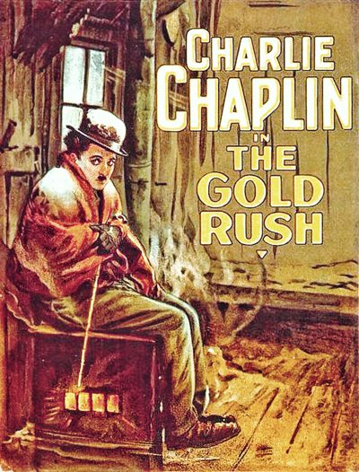

The Gold Rush
Studio: United Artists
Starring: Mack Swain, Tom Murray, Charlie Chaplin
Director: Charlie Chaplin
Writer: Charlie Chaplin
Producer: Charlie Chaplin
The Gold Rush is a 1925 American silent comedy film written, produced, and directed by Charlie Chaplin. The film also stars Chaplin in his Little Tramp persona, Georgia Hale, Mack Swain, Tom Murray, Henry Bergman and Malcolm Waite.
Trivia
- Nominated for: Academy Award for Best Original Dramatic or Comedy Score; Academy Award for Best Sound.
- Six hundred extras clambered up the 2300-feet pass dug through the mountain snow.
- Lita Grey, whom Chaplin married in November 1924, was originally cast as the leading lady but due to her pregnancy was replaced by Georgia Hale.
- Discussing the making of the film in the documentary series Unknown Chaplin, Hale revealed that the marriage had collapsed during production of the film; the final scene of the original version, in which the two kiss, reflected the state of his relationship with Hale by that time.
Filming Locations
- Colorado
- For two weeks, the unit shot on location at Truckee in the snow country of the Sierra Nevada.
- The rest of the film was shot on the back lot and stages at Chaplin's Hollywood studio, where elaborate Klondike sets were constructed.
Previous Showings
4 Runs • 1 Festival
Original Billings: 2 runs (February 14, 1926 - September 24, 1942)
Original Run: February 14 - 17, 1926 (Sunday - Wednesday)
All runs on record (4):
- February 14 - 17, 1926 (Sunday - Wednesday)Charlie Chaplin
- September 24, 1942 (Thursday - Saturday)Charles Chaplin
- January 20, 1995
- August 29, 2001Summer 2001